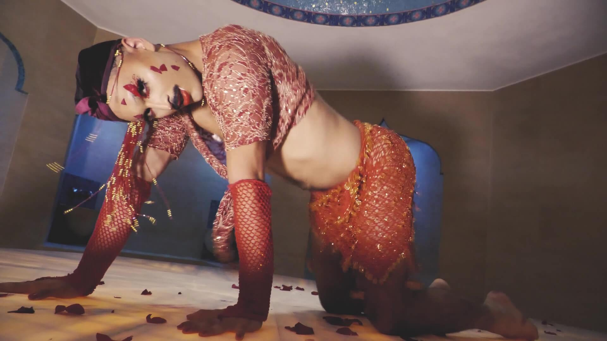
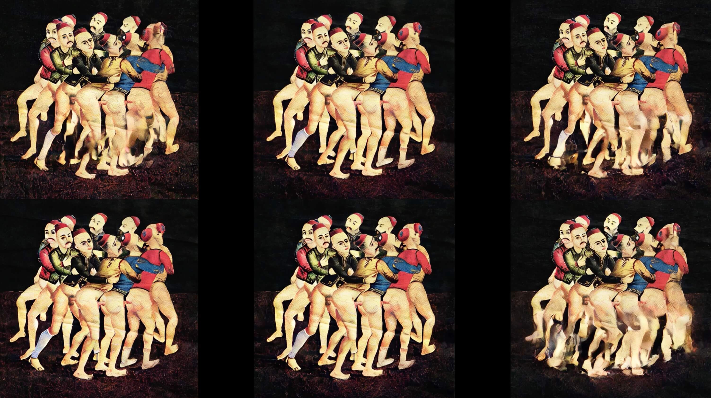
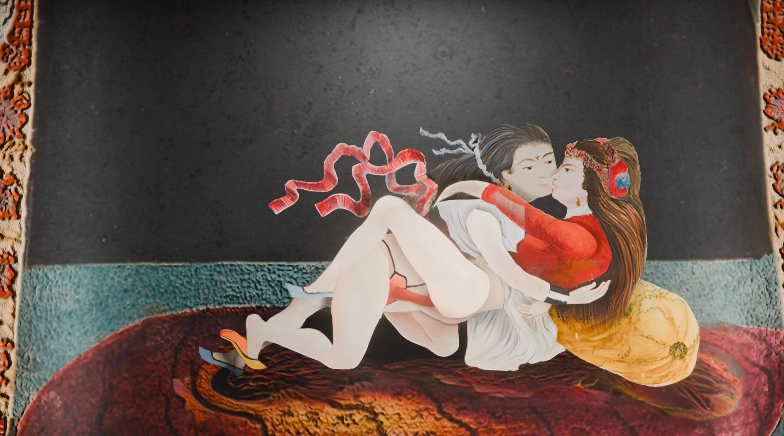
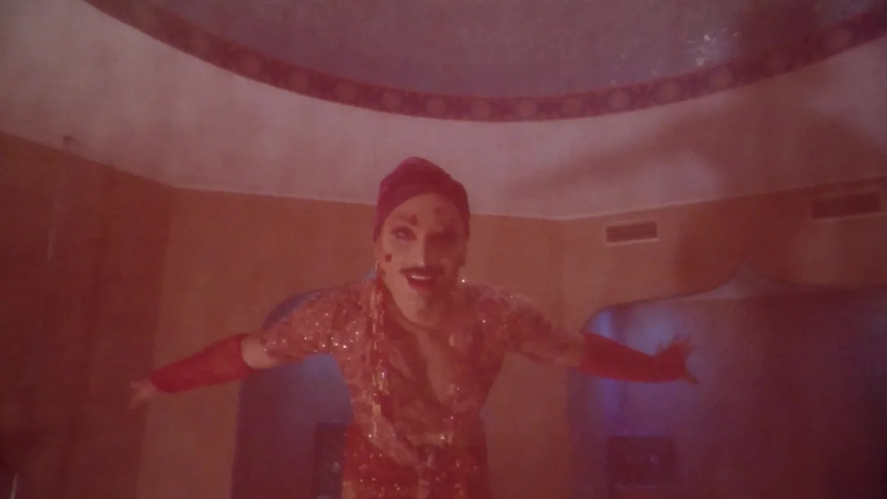
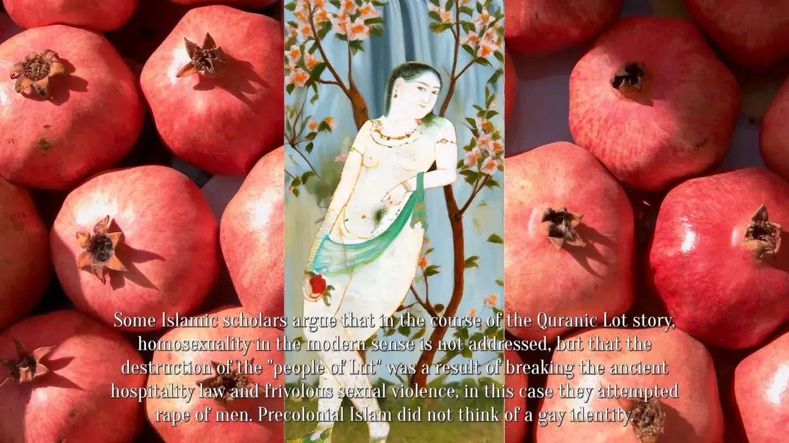
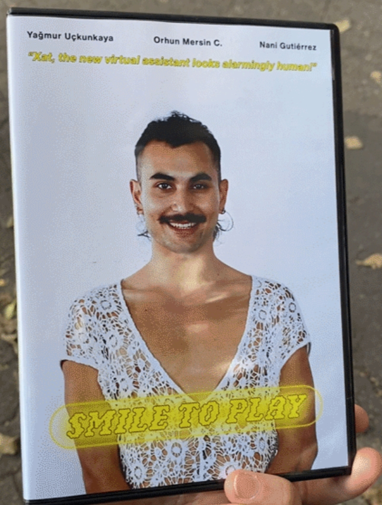
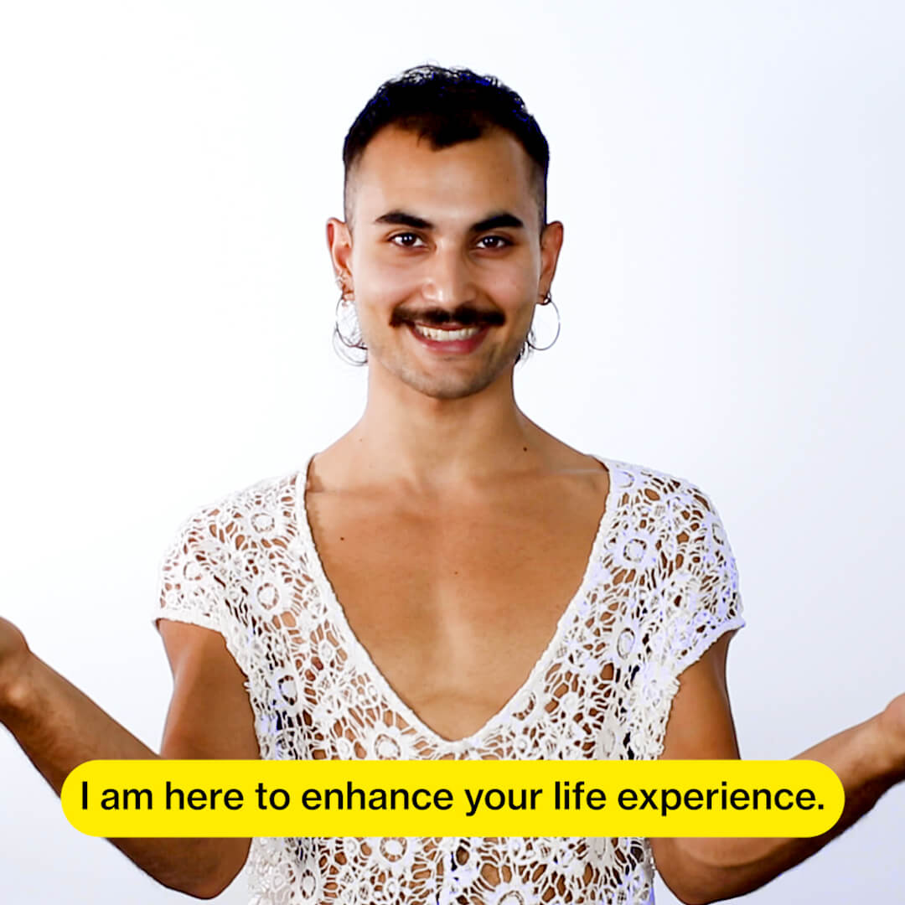
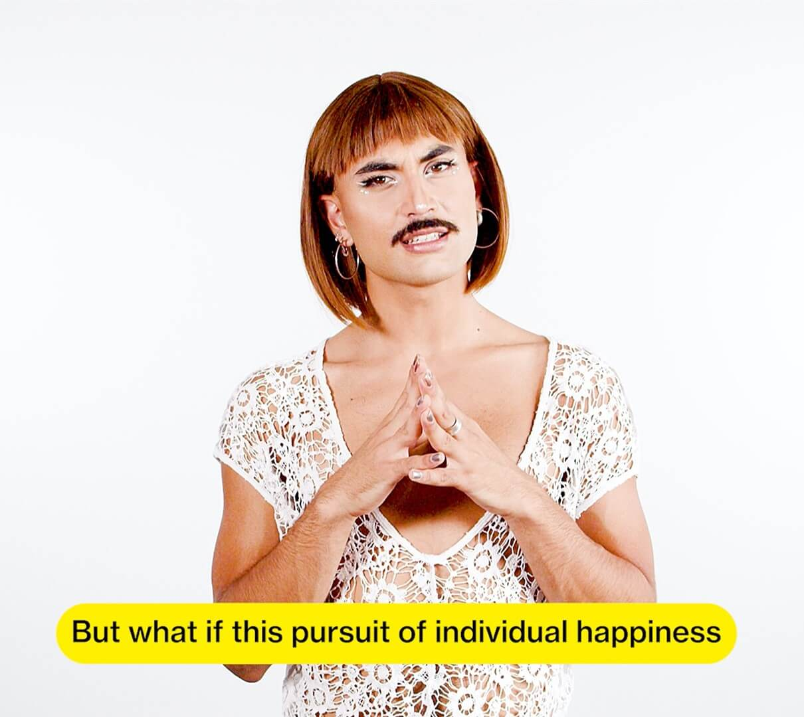
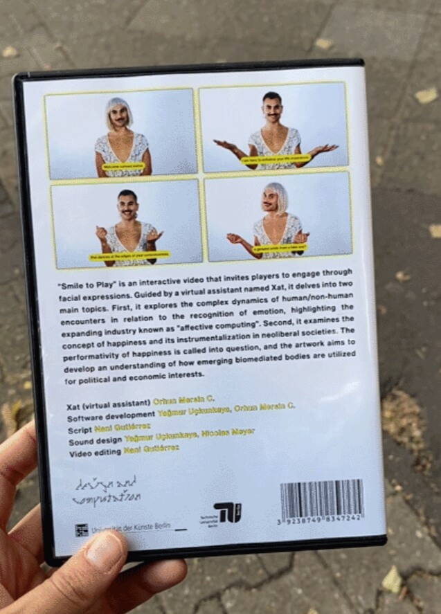

Fantasizing through drag, hallucinating through AI. Considering deepfakes, voice cloning, and lip-synch animations as "drag technologies," the femme-fatale 80s movie star Banu Alkan becomes the center of a queer re-imagination. In this gender-glitched hallucination, the "Turkish Aphrodite" is intertwined with mainstream queer-feminist scholars — is this her emancipation? We cannot know, we better keep fantasizing.
"She finds herself in a conversation with Aphrodite, being reminded what womanhood means."
Part of the exhibition "Attention is All I Need"
curated by Jonny-Bix Bongers
full video
How do social bonds with chatbots impact individual and collective subjectivities?
The Imaginary Intelligence (I.I.) is a customized chatbot with a sassy, flirty, and paranoid personality. The project explores how dialogue agents commodify intimacy and relationality — how presence is transformed into a marketable product, and how the pursuit of immediacy fosters a false sense of intimacy while reinforcing user dependency on simulated connections.
For Nani Gutiérrez's thesis presentation, a live interaction with a chatbot exhibiting paranoia about AI companies took place on 15.01.25, responding to prompts submitted anonymously by approximately 50 participants. Multiple viewers engaged simultaneously through an anonymous chat, creating a collective, confabulatory dialogue with this role-playing chatbot.
Nani Gutiérrez — M.A. Design & Computation thesis (UdK/TU Berlin)
Interactions with Dialogue Agents in a Role-Play Economy
CreditsConcept, research, design: Nani Gutiérrez
AI pipeline and software: Yağmur Uçkunkaya, Orhun Mersin
nanigut.com





Bitches On Their Deen is a video essay that looks at pre-colonial Islamic ideals in regards to sex, gender and queerness and its reverberated echoes across time and space. The work resurrects amateur erotica paintings from the early twentieth-century Ottoman Empire, drawn from the collection of Irvin Cemil Schick. At its core, the project employs cutting-edge AI technology to transform static amateur erotica paintings into dynamic scenes. By infusing movement and speech into these images, the work bridges the gap between past and present, creating a multi-sensory experience that reimagines the legacies of historical foundations beyond linear time forms.
CreditsConcept and direction: Anna Ehrenstein
AI/CGI work: Keny Chen
Drag artist: Orhun Mersin aka kekik
Interviews: Mohamed Amjahid and Moenirah Daniels
Commissioned by Kunstverein Heidelberg
full video
recap: Kaynas Club Amsterdam
Ex-Human is an interactive installation that explores the affective and philosophical implications of deepfake technology. A two-station network invites participants to take a selfie, which then automatically triggers a chain of algorithmic processes to produce short deepfake videos of the participant. This immediate, non-consensual generation mirrors the rapid and often unseen circulation of synthetic media online.
A fictional AI host, TransLator, frames the narrative and recasts the spectator as "ex-human," echoing Amerindian perspectivism and Paul Virilio's idea that every invention casts a shadow. Moving beyond common concerns of fraud, the work focuses on deepfake technology's seductive and immersive qualities, questioning its potential to trigger genuine affect, inspire fluid self-expression, or serve as a tool for digital anonymity and resistance.
A work by 3k collectiveScript and editing: Nani Gutiérrez
AI engineers: Yağmur Uçkunkaya and Orhun Mersin
Drag artist: Orhun Mersin
Sound: Yağmur Uçkunkaya
M.A. Design & Computation, UdK/TU Berlin
video




Smile to Play is an interactive video essay that invites players to engage through facial expressions. Guided by a virtual assistant named Xat, it explores the complex dynamics of human/non-human encounters in relation to the recognition of emotion, and the concept of happiness and its instrumentalization in neoliberal societies.
The title echoes the biometric checkout systems introduced in China called "Smile to Pay" — here, the same gesture is reframed as a gameplay mechanic to underline the commodification of happiness. Rather than asking whether machines can read emotions, the project asks what emotions become when operationalized: a currency for experience design, a vector for market segmentation, and a technology of normativity.
A work by 3k collectiveScript and videos: Nani Gutiérrez
Programmers: Yağmur Uçkunkaya and Orhun Mersin
Drag artist (Xat): Orhun Mersin
Sound: Yağmur Uçkunkaya
M.A. Design & Computation, UdK/TU Berlin